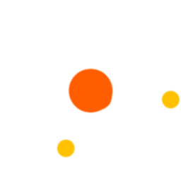

<div class="post-wrapper" *ngIf="post$ | async as post; else loading">
  <div class="post">
    <div class="header">
      <h1>{{ post.title }}</h1>

      <button routerLink="/" class="btn btn-link">На головну</button>
    </div>

    <div class="info">
      <strong>{{ post.author }}</strong>
      <small>{{ post.date | date:'medium':null:'ua'}}</small>
    </div>

    <div>
      <quill-view-html [content]="post.text"></quill-view-html>
    </div>
  </div>
</div>

<app-comments *ngIf="post$ | async as post; else loading"></app-comments>

<ng-template #loading>
  <div class="post-container">
    <div class="loading-wrapper"></div>

    <p class="text-center">Завантажую пост</p>
    
  </div>

</ng-template>
